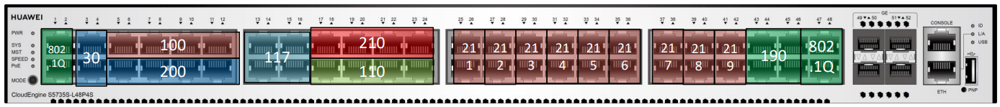
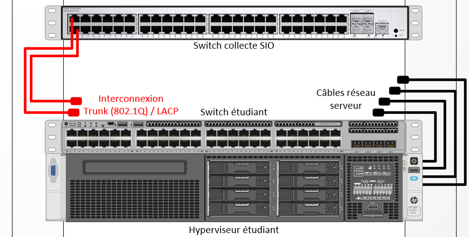

Infrastructure
L’Infrastructure réseau du lycée Fulbert simulant le réseau SportLudique
L’infrastructure comporte plusieurs périmètres de sécurité. Les services de SportLudique sont organisés en VLAN de niveau 1 (vlan par ports).
Les machines hôtes utilisables par les étudiants sont câblées via des prises Ethernet murale de labo dont le numéro est pair (2-4-6-8). Ces prises sont ensuite brassées sur les équipements dont vous avez la charge.
Les prises impaires respectivement (1,3,5,7) ne doivent pas être deconnectés du Switch HP (ou Huawei) sur leur port respectif (1, 3, 5, 7) dans le vlan 117. On vous demande de ne pas modifier ces ports afin de revenir facilement dans une configuration classique pour l’apprentissage et la connectivité au domaine lan.sio.lyceefulbert.fr

Schéma general

Etape préalable pour travailler sur le contexte SportLudique
Le VLAN 200 est le VLAN Labo pour toute la promotion des deuxièmes années SISR. Le VLAN 210 est le VLAN Labo de l’îlot 1. Le 220 celui de l’ îlot 2 etc…
Chaque site Chartres, Tours, Orléans et Bourges correspond à un îlot et possède donc son propre VLAN isolé du reste du réseau du Labo du lycée Fulbert.
L'ensemble des machnies clientes (OS utilisateurs) se ferra via des machines virtuelles locales gérées via VirtualBox connecté en mode bridge. La machine physique devra donc être brassé correctement sur vos équipements, mais devra réster sur le domaine auquel elle a été attribué en début d'année.
Ainsi à chaque début de séance vous vous brasserez, après avoir ouvert votre session windows, correctement sur votre infrastructure via une prise murale paire.
Puis, à chaque fin de séance vous vérifierez que le poste est brassé sur une prise impaire.
Gestion des serveurs
L'ensemble des serveurs nécessaires à vos infrastructure devront être gérés via la solution d'hyperconvergence Nutanix mis à disposition par vos enseignants, ainsi que sur un hyperviseur que vous devrez vous même choisir et mettre en place sur un serveur dédié à votre site. Chaque machine virtuelle devra posséder un nom logique permettant de l'identifier sans ambiguité. La solution Nutanix hébergeant les VM de l'ensemble des sites (ainsi que celles de l'infrastructure du BTS), merci de réspecter la convention de nom suivante sous peine de suppression pure est simple de celle ci:
Préfixe à utiliser dans les noms des VM sur la solution Nutanix
| Ville | Prefixe |
|---|---|
| Chartres | CHA |
| Tours | TRS |
| Orléans | ORL |
| Bourges | BRG |
Gestion de la configuration materielle dans les hyperviseurs
Les capacités physiques des serveurs qui hébergent vos machines virtuelles ne sont pas infinies. Par conséquent, il est crucial de procéder à un dimensionnement optimal lors de la création de vos machines virtuelles. Par exemple, il est recommandé d'éviter d'allouer 16 Go de RAM à une machine virtuelle Windows. En ce qui concerne l'espace disque, une capacité de 500 Go est généralement suffisante pour la plupart des cas d'utilisation, à moins que les machines ne nécessitent de fortes activités d'écriture sur le disque, telles que les systèmes SIEM, les serveurs de journaux centralisés, les bastions, et ainsi de suite.
Gestion de votre hyperviseur
Chaque site disposera de son propre hyperviseur pour héberger les serveurs secondaires ou non critiques. Chaque groupe devra choisir entre les solutions VMWare ESXi et Proxmox.
Le matériel mis à la disposition de chaque site se compose d'un switch et d'un serveur physique qui hébergera l'hyperviseur. Le switch de votre site servira à interconnecter votre hyperviseur à vos réseaux à travers le switch de collecte géré par vos enseignant. Il appartient à chaque groupe de configurer intégralement son serveur et son switch.
Pour chaque site, le matériel mis à disposition est organisé comme suit : 
Le matériel de tous les sites étant hébergé dans la même baie informatique, l'accès au matériel sera régulé pour des questions pratiques. Comme dans un datacenter, chaque groupe devra faire une demande au moins une heure avant à un enseignant pour obtenir un créneau de 2h afin d'accéder physiquement à son matériel. L'accès ne sera accordé qu'à un groupe à la fois, et chaque groupe ne pourra faire qu'une demande par journée. Un registre sera tenu à jour à des fins de traçabilité.
Login et password non sécurisé à posséder
| Microsoft Windows | administrateur / P@ssw0rd123456! |
|---|---|
| Serveur | nomuser / nomuser (géré dans l’annuaire AD) |
| Stations |
| Distribution linux | prefix-admin / P@ssw0rd123456! |
|---|---|
| Switch / Routeurs | admin / P@ssw0rd123456! |
| Mode privilégié (enable) | P@ssw0rd123456! |
prefix correspond à TRS, BRG, CHA, ORL respectivement pour Tours, Bourges, Chartres et Orléans
Il vous sera demandé de créer d'autres comptes plus personnalisés, qui seront par ailleurs gérés par un bastion d'accès. Ces comptes vous offriront un moyen d'accéder à votre infrastructure en cas de panne générale, ce qui les rend similaires à des portes dérobées indispensables pour vos activités d'apprentissage.
Attention
D'autres comptes devront être créés et seront gérés par un bastion d'accès. Ces comptes vous permettront d'avoir un accès en cas de dysfonctionnement général dans votre infrastructure. Ils peuvent être considérés comme une porte dérobée nécessaire pour votre apprentissage. Cependant, ils ne doivent pas être utilisés en production normale.
L’Infrastructure réseau
La structure générale du réseau comprend :
- Les sous réseaux des sites distants
- Les sous réseaux des départements
- Le réseau Backbone
- Le réseau WIFI
- La DMZ de chaque site géographique
- Le réseau d’accès à Internet
Le réseau sportLudique héberge tous les serveurs dans une baie de serveurs installée dans le service Informatique du département Réseau. Les serveurs hébergent les applications de gestion et de supervision du parc informatique.
Le réseau mobile WIFI permet de servir les postes nomades du personnel des différents sites. Ce réseau doit être assez souple et adaptable pour fournir un accès à Internet au public externe sans toutefois compromettre la sécurité du SI.
Plan d’adressage IP
Le réseau général est construit autour de l’adresse 172.28.0.0 avec un masque de 16 bits. Ceci permet de couvrir l’ensemble du plan d’adressage de l’entreprise mais aussi pour les évolutions. L’administrateur vous demande de réfléchir aux découpages en sous réseau pour sécuriser les différents services de chaque site. Le plan d’adressage IP 192.168.x.0 /24 est attribué à la DMZ de chaque site.
Les tableaux en annexe à compléter contiennent le plan d’adressage IP de l’ensemble du réseau. Ce plan d’adressage tient compte d’une exploitation des adresses IP en mode dynamique par 2 serveurs DHCP.
La maintenance de ce plan d'adressage devra obligatoirement s'effectuer via la solution phpipam mis en place par votre enseignant (https://ipam.sio.lyceefulbert.fr)
Un bloc d’adresse est réservé pour les équipements en adressage fixe et ceci pour chaque sous réseaux. Des règles d’ingénierie ont été définies et imposent de placer les plages d’adresses fixes sur les adresses les plus hautes de chaque sous réseau.
Les éléments du réseau
Ce réseau regroupe les fonctions suivantes :
- Une structure de VLAN de niveau 3 est utilisée pour la structuration des réseaux WIFI. Cette structure permet de limiter les domaines de diffusion. Les VLANs de sportludique sont organisés selon une structure hiérarchique par département.
- Un VLAN de gestion permet d’accéder aux équipements de réseau via les postes Administrateur du service Informatique du département réseau. La gestion des équipements permet d’assurer la maintenance, les mises à jour des configurations ou des IOS et les opérations ponctuelles de surveillance et de test du réseau.
- Le routage des VLAN utilise la technique des sous interfaces VLAN et l’encapsulation 802.1Q implémentés dans les switch et routeurs.
- Un connexion Haut débit assure une liaison à l’Internet. Chaque site est connecté via à routeur au réseau publique via un prestataire (géré par votre professeur qui vous donnera en temps utile les adresses IP publiques utilisables).
- Chaque site dispose d’une connexion de secours de type xDSL fournie par un second FAI afin d’assurer une haute disponibilité de l’accès Internet. On réfléchira à une solution pour rendre les services web offerts par chaque site hautement disponible eux aussi.
- les serveurs DHCP et serveurs de nom DNS assurent la gestion des machines. Ces services doivent être installés sur 2 serveurs physiquement séparés pour assurer la tolérance aux pannes (HA).
- Un routeur filtrant assure les fonctions de pare feu entre le LAN, la DMZ et l’internet (WAN), l'appliance SN210 de Stormshield ou la distribution pfsense basée sur l'OS BSD (réputé pour son éfficacité en sécurité) devront être privilégiée pour cette tâche. Ce point névralgique devra être hautement disponible (impossible pour les SN210) lui aussi au moins sur le site physique de chartres.
Infrastructure SportLudique (au siège à chartres)
L’entreprise comporte 6 services (6 VLANs minimum) dont le département réseau qui renferme le service Informatique. Ce service assure la gestion et administration du réseau et du parc informatique.
Les ressources informatiques (serveurs, bases de données, systèmes de supervision…) sont situées dans une baie de serveurs.
Parmi ces serveurs on trouve les 2 serveurs DHCP en redondance à chaud et le serveur Proxy qui se charge des requêtes http des personnels de l’entreprise
Les salles ressources au rez de chaussée du bâtiment offrent des accès aux équipements multimédia, vidéo, téléphones IP, imprimantes et ordinateurs pour les utilisateurs externes tel que des clients ou des fournisseurs.
Ces salles sont regroupées dans le nième VLAN intégré dans le réseau.
Abonnements Internet pour chaque site
Un abonnement FAI haut débit Fibre est géré par un routeur CISCO qui supporte le trafic principal. Un abonnement FAI ADSL de secours devra être mis en place chargé de prendre le relais en cas de panne de l’abonnement du routeur primaire. Lorsque le lien primaire retrouve un état opérationnel il reprend la gestion du trafic (Protocole propriétaire Cisco HSRP).
Les 2 abonnements Internet sont souscris avec les opérateurs Orange et SFR qui délivrent un contrat de service Pro Fibre 100Mb/s avec une SLA GTR 4heures pour l’abonnement principal Fibre et un contrat bas débit ASDL GTR 48Heures pour l’abonnement de secours.
Attention
Les Adresses IP suivantes correspondent aux passerelles (Gateway) fournies par les opérateurs. C'est à vous de trouver l'IP publique correspondante à définir sur votre équipement (Voir schema réseau sur la page Annexes)
| idVLAN | Chartres | Tours | Orléans | Bourges | |
|---|---|---|---|---|---|
| Abonnement FIBRE : | 200 | 183.44.28.2 /30 | 183.44.37.2 /30 | 183.44.45.2 /30 | 183.44.18.2 /30 |
| Abonnement ADSL : | 100 | 221.87.128.1 /30 | 221.87.137.1 /30 | 221.87.145.1 /30 | 221.87.118.1 /30 |
Accès Internet et DMZ
Cette partie représente le périmètre de sécurité pour l’accès à Internet. Une zone DMZ est intégrée dans le routeur pare-feu qui règlemente les échanges l’accès à Internet. Ce routeur assure la gestion du sous réseau DMZ qui renferme les services WEB et FTP, la fonction de pare feu et l’interconnexion au réseau privé et Internet. Son implémentation sera créée avec une VM connecté aux différents VLANS du lycée Fulbert pour isoler les flux et simuler un véritable routeur dédié.
Les 2 services SFTP et WEB de la DMZ sont intégrés dans une VM dans une machine Windows ou linux pour héberger le site WEB de chaque site. Ces services sont accessibles depuis l’Internet (simulé dans le labo) et le réseau interne sous certaines conditions.
Le périmètre de sécurité est représenté par les fonctions suivantes :
- Pare Feu entre le réseau interne, la DMZ et Internet avec sécurisation par des règles de contrôle d’accès. Ces règles sont définies ci-dessous.
- Haute disponibilité sur l’accès à Internet assuré par 2 routeurs en HSRP avec fonction NAT/PAT. Une fonction port forwarding permet de rediriger les requêtes provenant de l’Internet (du routeur principal fibre) vers les ressources accessibles de l’association (http, FTP…).
- Pour compléter le périmètre de sécurité, un serveur Proxy WEB (Proxy squid) réglemente l’accès à Internet pour l’ensemble des utilisateurs internes de chaque site en les traçant excepté pour les postes d’administration du service Informatique.
Règles de contrôle d’accès :
1/ Seuls les requêtes du serveur Proxy peut accéder à Internet.
2/ Les Internautes peuvent accéder à la DMZ mais pas au réseau privé.
3/ Les sous réseaux de SportLudique peuvent accéder aux ressources de la DMZ.
4/ Les postes nomades du réseau Wifi ¨Visiteurs¨ n’ont accès qu’à Internet. Les postes du réseau Wifi ¨Employés¨ peuvent accéder au réseau Interne et à Internet.
5/ Le trafic ICMP est autorisé pour les postes du service Informatique.
6/ Le trafic ICMP provenant de l’Internet est interdit.
Messagerie Electronique
Un serveur de messagerie sera aussi disponible sur chaque site. Le nom de domaine sportludique.fr étant réservé, les adresses auront la forme utilisateur@<ville>.sportludique.fr
Les utilisateurs devront pouvoir consulter leur messagerie du réseau internet et du réseau publique. Des échanges seront évidemment possibles entre chaque site géographique.
Réseau WIFI
Pour cette maquette le réseau WIFI interne couvre la surface occupée dans le bâtiment Hall d’accueil et l’espace extérieur qui couvrira les zones utilisées pour les journées évènementielles porte ouverte. Ce point d’accès contrôle 2 réseaux radios identifiés par un SSID.
Un SSID ¨Visiteurs¨ permet de fournit une connectivité Internet au public externe à l’association dans le cadre de leur visite dans les locaux ou lors d’activités événementielles type journées portes ouvertes qui accueille du public ou des invités. Ce réseau offre une connectivité ouverte non sécurisée à Internet. L’identification du réseau est diffusée.
Un SSID ¨Employés¨ fournit au personnel interne munis de postes portables l’accessibilité Internet et vers le réseau privé. Pour ce SSID on utilise la sécurisation WPA et une authentification WPA2-Entreprise. Pour ce réseau, le cryptage AES est utilisé et le SSID de réseau n’est pas diffusée. L’authentification sera assurée via le contrôleur de domaine ActiveDirectory et une stratégie d’accès au réseau sera différente en fonction des groupes utilisateurs. Un test sera fait avec une authentification par certificats électroniques.
Ces 2 réseaux sont séparés par des VLAN de niveau 3 et une règle sur le routeur PRF permet d’éviter que les visiteurs puissent accéder au réseau interne privé.
Supervision de réseau, Maintenance et déploiement
En cas de panne l’analyse de problème réseau s’effectue via l’outil d’analyse de trame Wireshark qui permettra de vérifier les anomalies de fonctionnement du réseau pour la validation, les tests ou la mise en service mais aussi le dépannage de situation en cas de blocage.
Une fonction de port mirroring sur les commutateurs Cisco permet d’analyser les trafics sur les liens stratégiques
Un service d’administration à distance utilisant le protocole SSH version 2 permet une prise de contrôle à distance des équipements routeurs et commutateurs du réseau en mode sécurisé. L’application SSH sera installée sur les équipements de réseau. Ce protocole utilise le mode de chiffrement à clés asymétriques RSA (longueur de clé 1024).
Les équipements de réseau sont accessibles en SNMP pour permettre l’exploitation du réseau par le logiciel de superivision (Centreon ou autre solution compatible avec le protocole SNMP). On utilise la communauté ¨spludique¨ pour les relations agent/serveur avec droits en lecture. On utilisera les traps ou notifications snmp définies par Cisco pour surveiller le fonctionnement du protocole HSRP sur les liaisons internet, les ruptures de liens et les pannes et redémarrages des équipements.
Le superviseur est dédié à la supervision des équipements de réseau (commutateurs, routeurs, passerelles, Points d’accès).
L’outil de gestion de parc et gestion d’incidents GLPI permet d’assurer le suivi et la gestion des postes et serveurs informatiques. Un service de télé déploiement de logiciel devra être mis en place dans chaque site par les équipes techniques.